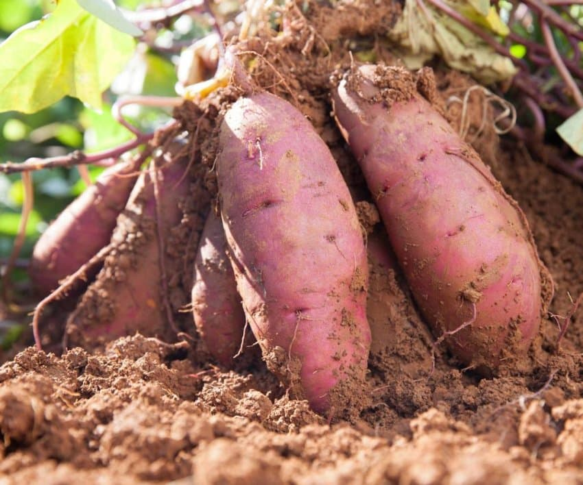
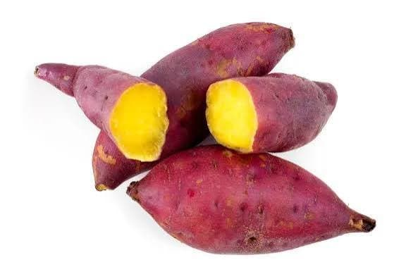
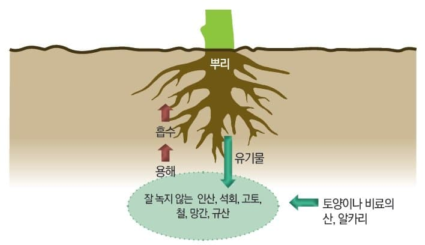
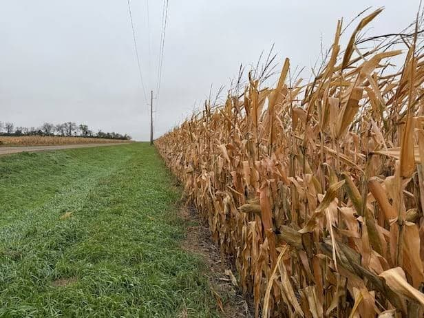
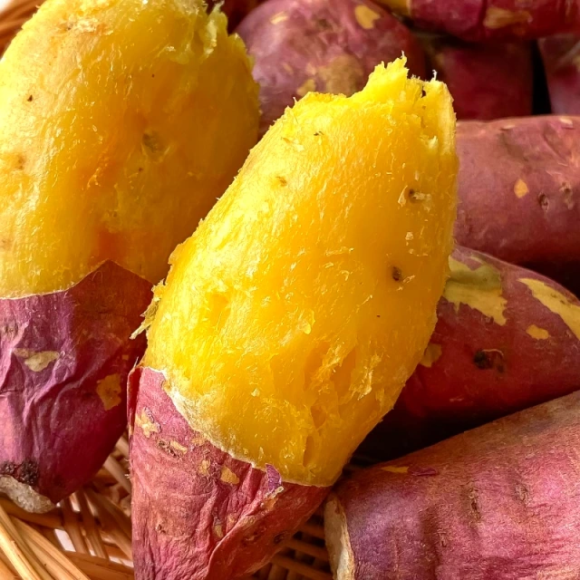
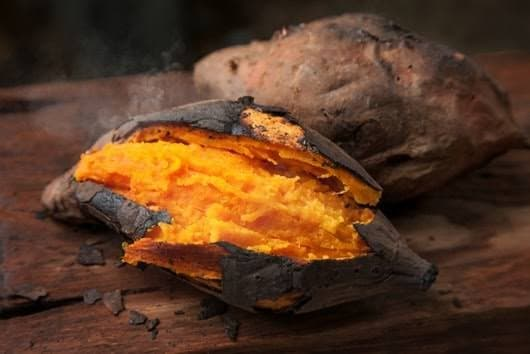

오늘은 고구마의 날이다
고구마는 영원한 라이벌 감자에 밀려 좀 취급이 안좋은 경우가 많지만 사실 따지고보면 일장일단이 있고,
땅들이 황폐화되고 생존 아포칼립스 비슷한 세계가 도래하면 닥치고 고구마를 심어야 할 정도로 고구마는 꽤 대단한 작물임

먼저 고구마의 역사에 대해 조금 말하자면
고구마의 최초 재배지가 어디인지는 아직도 논쟁의 영역이지만,
감자와 같이 아메리카 대륙에서 발견된 작물이다
멕시코 남부에서 중앙아메리카~ 남아메리카 북서부에서 인류가 최초로 재배했다고 한다
여하튼 1492년 콜럼버스의 아메리카 대륙 도착 이후 고추, 감자, 고구마 같은 ㅆㅅㅌㅊ 작물들이 전 세계로 퍼져나가는 결정적인 시발점이 되었는데,
비교적 따뜻한 환경에서 자라는 고구마 특성상 당시 유럽에서는 실패해 대중화되지 못했지만 고온다습한 동아시아 환경에서 엄청난 환영을 받았음
일본 사쓰마 지역에서 태풍으로 벼농사를 망칠 때마다 고구마로 연명해 사츠마이모(사쓰마 감자) 라 부르며 귀히 여겼었고,
중국에서 대기근이 닥쳤을 때, 수많은 백성을 굶주림에서 이 고구마가 구해내자 대대적으로 책으로 재배법을 보급했을 정도
조선 역시 정조시절, 실학자들이 백성을 구제할 핵심 작물로 보고 국가 재배법을 적극 보급하려 애썼다

여하튼 이 고구마가 중국 일본 조선에서 주목받았던 이유가 뭐냐면
온도만 따뜻하면 어떠한 척박한 땅에서도 잘 자라는 특성 때문임
고구마는 땅의 영양분(지력)이 부족하더라도 잘 자람 심지어 가물어도 잘 자란다...;;

잠시 지력에 대해 조금 얘기를 해보자면
지력이란 땅 내의 영양분을 말함
작물에 따라 지력 소모율이 다르며 대표적으로 옥수수가 지력을 엄청 빨아들이기로 유명한 작물이다
즉, 지력소모가 큰 작물일수록 계속 그 작물만 연작하면 그 땅은 곧 황폐화 된다는 뜻이다
그래서 과거의 인류는 인분뇨, 즉 사람의 똥오줌 , 그리고 가축의 똥오줌을 퇴비로 새로운 영양분(질소, 칼륨 기타 다른 영양분 등등) 으로 지력을 보충하는 식으로 농사를 지었음
현재도 이렇게 농작물을 재배하는 방식을(+농약없이) 유기농이라고 부른다
1909년 프리츠 하버라는 사람이 질소와 수소를 이용해 암모니아를 대량 생산하는,
인류 인구 확산의 큰 공정방법을 개발함
즉, 현재 약 80억명중 약 절반 가량이 저사람이 만든 공법 덕분에 먹고살 수 있게 되었다고 봐도 과언이 아니다
똥오줌(암모니아, NH₃)이 인류 식량 섭취 및 생존에 있어 가장 중요한 성분이라는 점이 참 아이러니하다...

다시 작물 얘기로 돌아와서 하여튼 저 하버라는 사람 덕분에 비료료 인해 인류의 작물 재배속도는 폭발적으로 증가함
인류의 주식인 쌀, 밀 그리고 가장 질소를 많이 잡아먹는 옥수수 재배에 엄청난 영향을 끼침
가히 혁명에 가까운 속도라고 봐도 과언이 아님

근데 고구마는 저 하버-보슈법 등장에 그렇게 큰 영향을 받지 않았음
고구마는 질소 성분을 너무 많이 주면 고구마가 굵어지는 대신 잎과 줄기만 무성해지는 현상이 발생하기 때문임
처음 언급했던 아포칼립스 세상이 오게 되면 닥치고 고구마를 재배해야 하는 이유가 바로 여기서 나옴
고구마는 인공 비료 의존도가 크지 않으며, 온도만 받쳐주면 척박한 땅에서도 쑥쑥 자라기 때문
심지어 연작도 무리없이 가능하며 가물어도 잘 자란다
게다가 고구마는 조리방법에 따라 맛이 지 좆대로 바뀌어서 어떻게 조리하느냐에 따라 맛이 천차만별이다
그리고 기본적으로 단맛이라 어떤 음식을 조지더라도 호감형 맛을 낸다

오늘은 고구마의 날이기도 하고
다들 군고구마나 다른 고구마 요리를 한뱐 먹어보는건 어떨까?
댓글
수집 당시 댓글 210개
· ㅇㅇ · 11.21 20:59:50
· ㅇㅇ · 11.22 16:21:42
땅토마토 · 11.21 20:56:39
· 디시닉 · 11.21 20:57:50
· 땅토마토 · 11.21 20:58:42
· 디시닉 · 11.21 21:03:10
· 땅토마토 · 11.21 21:04:15
디시닉 · 11.21 20:57:27
· 땅토마토 · 11.21 20:59:18
llllllIllllll · 11.21 21:00:35
· ㅇㅇ · 11.21 21:05:12
· ㅇㅇ · 11.22 17:09:32
ㅇㅇ · 11.21 21:03:36
ㅇㅇ · 11.21 21:03:59
ㅇㅇ · 11.21 21:08:03
ㅇㅇ · 11.21 21:09:53
· ㅇㅇㅇ · 11.21 21:27:48
· ㅇㅇ · 11.21 23:51:22
ㅇㅇ · 11.21 21:12:13
ㅇㅇ · 11.21 21:12:27
· ㅁㄴㅇ · 11.21 23:45:18
ㅇㅇ · 11.21 21:12:37
ㅇㅇ · 11.21 21:14:13
· ㅇㅇ · 11.21 21:14:26
ㅇㅇ · 11.21 21:14:17
엘갤러 · 11.21 21:17:13
ㅇㅇ · 11.21 21:20:24
ㅇㅇ · 11.21 21:21:37
ㅇㅇ · 11.21 21:23:27
ㅇㅇ · 11.21 21:24:05
· ㅇㅇ · 11.21 22:09:29
ㅇㅇ · 11.21 21:24:07
ㅇㅇ · 11.21 21:25:49
00 · 11.21 21:25:54
ㅇㅇ · 11.21 21:27:17
· ㅇㅇ · 11.21 22:12:15
ㅇㅇ · 11.21 21:27:23
micro멍거 · 11.21 21:30:33
· ㅇㅇ · 11.21 21:35:30
· micro멍거 · 11.21 21:36:49
· ㅇㅇ · 11.21 21:39:32
· ㅁㄴㅇ · 11.21 23:41:01
히이잉 · 11.21 21:35:11
ㅇㅇ · 11.21 21:35:18
ㅇㅇ · 11.21 21:47:32
· ㅇㅇ · 11.21 21:56:17
· 문재인대통령 · 11.21 22:01:01
ㅇㅇ · 11.21 21:48:08
ㅇㅇ · 11.21 21:51:23
ㅇㅇ · 11.21 21:53:42
· ㅇㅇ · 11.21 22:03:17
ㅇㅇ · 11.21 22:00:50
· ㅇㅇ · 11.21 22:00:58
· ㅇㅇ · 11.21 22:01:34
ㅋㅅㄱㄴ · 11.21 22:04:51
ㅇㅇ · 11.21 22:04:56
ㅇㅇ · 11.21 22:06:59
ㅇㅇ · 11.21 22:12:09
ㅇㅇ · 11.21 22:31:55
ㅇㅇ · 11.21 22:37:20
히이잉 · 11.21 22:49:10
ㅇㅇ · 11.21 22:58:12
ㅇㅇ · 11.21 23:24:04
· ㅇㅇ · 11.21 23:25:03
고구마 · 11.21 23:26:53
ㅁㄴㅇ · 11.21 23:39:41
운빨좆망겜 · 11.21 23:40:15
ㅇㅇ · 11.21 23:53:37
ㅇㅇ · 11.21 23:54:29
악의꽃 · 11.22 00:43:41
ㅇㅇ · 11.22 00:52:08
· ㅇㅇ · 11.22 00:52:20
· ㅇㅇ · 11.22 09:59:21
ㅇㅇ · 11.22 01:00:42
ㅇㅇ · 11.22 01:50:19
ㅇㅇ · 11.22 02:28:02
ㅇㅇ · 11.22 02:28:06
ㅇㅇ · 11.22 03:46:00
ㅇㅇ · 11.22 04:06:59
ㅂㅈㄷㄱ · 11.22 05:57:09
ㅇㅇ · 11.22 06:41:03
ㅇㅇ · 11.22 08:00:16
· ㅇㅇ · 11.22 09:18:34
· ㅇㅇ · 11.22 11:15:56
ㅇㅇ · 11.22 08:19:17
ㅇㅇ · 11.22 09:53:40
ㅇㅇ · 11.22 10:48:10
ㅇㅇ · 11.22 10:51:26
더블알발음은아르르 · 11.22 10:54:47
ㅇㅇ · 11.22 11:12:57
ㅇㅇ · 11.22 12:17:56
ㅇㅇ · 11.22 12:33:58
ㅇㅇ · 11.22 12:58:34
ㅇㅇ · 11.22 12:59:27
· ㅇㅇ · 11.22 13:03:36
ㅇㅇ · 11.22 13:36:10
ㅇㅇ · 11.22 14:14:30
ㅇㅇ · 11.22 16:17:03
ㅇㅇ · 11.22 17:11:57
펜도르 · 11.22 17:49:26
일리없는자톨 · 11.21 10:52:04
· ㅇㅇ · 11.21 14:46:55
ㅇㅇ · 11.21 11:01:47
· ㅇㅇ · 11.21 11:24:34
· ㅇㅇ · 11.21 13:19:39
ㅇㅇ · 11.21 11:01:50
ㅇㅇ · 11.21 11:15:56
고구마마탕 · 11.21 11:18:45
수류탄이야 · 11.21 11:20:43
ㅇㅇ · 11.21 11:32:09
ㅇㅇ · 11.21 11:35:26
ㅇㅇ · 11.21 11:35:32
ㅇㅇ · 11.21 11:35:39
· ㅇㅇ · 11.21 11:40:43
· ㅇㅇ · 11.21 12:06:31
· ㅇㅇ · 11.21 12:07:23
· ㅇㅇ · 11.21 12:07:49
· ㅇㅇ · 11.21 20:44:24
· 바쇽 · 11.21 20:50:45
· ㅇㅇ · 11.21 20:51:05
· 디시닉 · 11.21 20:55:00
· ㅇㅇ · 11.22 09:49:17
MIRA_HUNTR/X · 11.21 11:40:06
ㅇㅇ · 11.21 11:40:41
둥실라이드 · 11.21 11:42:01
ㅇㅇ · 11.21 11:44:04
왕사슴 · 11.21 11:51:36
씹퇴물매드크라운 · 11.21 12:07:38
· 아울락 · 11.21 12:09:16
아울락 · 11.21 12:09:01
ㅇㅇ1 · 11.21 12:15:55
· 정화수 · 11.21 12:59:23
· ㅇㅇ · 11.21 20:54:08
· 디시닉 · 11.21 20:54:26
· ㅇㅇ · 11.22 09:49:53
내똥집엔크리넥스 · 11.21 12:35:47
ㅇㅇ · 11.21 12:39:47
블랙글레이즈드 · 11.21 13:07:27
🍠
· ㅇㅇ · 11.21 21:06:11
분탕용깡계 · 11.21 13:09:09
· ㅇㅇ · 11.21 21:10:41
ㅇㅇ · 11.21 13:26:31
최덕배 · 11.21 13:55:02
야아아 · 11.21 14:45:10
꿀바른미네랄 · 11.21 15:37:29
ㅇㅇ · 11.21 18:09:42
ㅇㅇ · 11.21 20:42:08
· ㅇㅇ · 11.21 20:42:25
봇치쟝 · 11.21 20:42:10
실베도로롱 · 11.21 20:42:22
· 실베도로롱 · 11.21 20:42:39
· 황족 · 11.21 20:45:52
· ㅇㅇ · 11.21 21:06:21
· ㅇㅇ · 11.21 21:21:54
침울이에요 · 11.21 20:43:31
아님말고 · 11.21 20:43:33
ㅇㅇ · 11.21 20:44:09
황족 · 11.21 20:44:58
· 실베도로롱 · 11.21 21:04:10
· ㅇㅇ · 11.21 21:06:35
· ㅇㅇ · 11.21 21:21:46
ㅇㅇ · 11.21 20:45:36
· ㅇㅇ · 11.21 20:49:23
ㅇㅇ · 11.21 20:45:37
· ㅇㅇ · 11.21 20:51:14
· ㅇㅇ · 11.21 20:54:45
· ㅇㅇ · 11.21 20:56:37
ㅇㅇ · 11.21 20:46:25
ㅇㅇ · 11.21 20:47:29
ㅇㅇ · 11.21 20:48:23
니엔테 · 11.21 20:48:24
· ㅇㅇ · 11.21 21:22:00
ㅇㅇ · 11.21 20:48:57
· ㅇㅇ · 11.21 20:52:28
· ㅇㅇ · 11.21 20:56:21
· ㅇㅇ · 11.21 22:01:14
· 초오가타교진 · 11.21 23:42:11
ㅇㅇ · 11.21 20:49:48
ㅇㅇ · 11.21 20:50:05
· ㅇㅇ · 11.21 21:50:26
ㅇㅇ · 11.21 20:50:15
· ㅇㅇ · 11.21 20:50:45
· ㅇㅇ · 11.22 09:23:40
· ㅇㅇ · 11.22 09:50:40
ㅇㅇ · 11.21 20:50:41
· ㅇㅇ · 11.21 20:52:58
· ㅇㅇ · 11.21 20:53:32
· ㅇㅇ · 11.21 20:53:37
향격쳐 · 11.21 20:51:04
· ㅇㅇ · 11.21 20:53:02
ㅇㅇ · 11.21 20:51:28
· ㅇㅇ · 11.21 20:54:48
· ㅈ레이븐 · 11.21 21:42:12
ㅇㅇ · 11.21 20:52:10
· ㅇㅇ · 11.21 20:53:42
· ㅇㅇ · 11.21 20:56:59
· ㅇㅇ · 11.21 21:54:19
관타나모 · 11.21 20:53:19
ㅇㅇ · 11.21 20:55:20
ㅇㅇ · 11.21 20:56:36
ㅇㅇ · 11.21 10:51:15
· 호박고구마 · 11.21 11:26:26
· 안경음침녀 · 11.21 11:35:28
· ㅇㅇ · 11.21 11:39:41
· ㅇㅇ · 11.21 11:49:44
· ㅇㅇ · 11.21 12:10:41
· ㅇㅇ · 11.21 15:29:23
· olbersia · 11.21 19:31:31
· 바쇽 · 11.21 20:46:04
· ㅇㅇ · 11.21 20:47:44